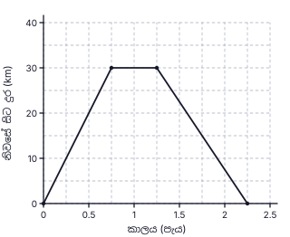
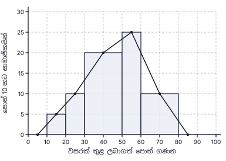
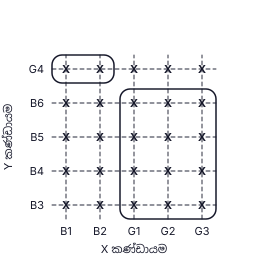
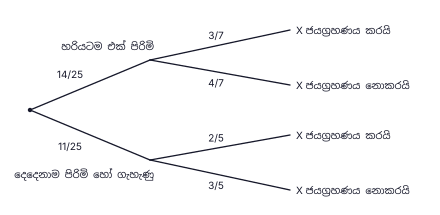

25. චාප ඡේදන ලක්ෂ්ය හරහා A කෝණයේ සමච්ඡේදකය ඇඳීම (ලකුණු 1); චාප ඡේදන ලක්ෂ්ය හරහා B හිදී AB ට ලම්බකය ඇඳීම (ලකුණු 1); ඒවා හමුවන ලක්ෂ්යය O
අවසාන පිළිතුර: O = A හි කෝණ සමච්ඡේදකය හා B හි ලම්බකය හමුවන ලක්ෂ්යය
(ලකුණු 2)
1. 8 × 18 = 144 (කම්කරු දින); දින 12 කට අවශ්ය කම්කරුවන් = 144 ÷ 12 = 12; අමතර = 12 − 8
අවසාන පිළිතුර: කම්කරුවන් 4 දෙනෙකි
(ලකුණු 2)2. E හරහා AB ට සමාන්තර රේඛාවක් ඇඳීමෙන්: AÊC = BÂE + EĈD (ඒකාන්තර කෝණ); 125° = BÂE + 70°
අවසාන පිළිතුර: 55°
(ලකුණු 2)3. කු.පො.ගු. = 12x: 9 − 10 + 812x
අවසාන පිළිතුර: 712x
(ලකුණු 2)4. සෘජු ප්රිස්මයක මුහුණත් සෘජුකෝණාස්ර (හා ත්රිකෝණාකාර අන්ත දෙක) වේ. සමචතුරස්රයක් හෝ අසමාන පාද ඇති සෘජුකෝණාස්රයක් පාර්ශ්වික මුහුණතක් විය හැකි නමුත් සෘජු කෝණයක් නැති සමාන්තරාස්රයක් විය නොහැක
අවසාන පිළිතුර: (iii)
(ලකුණු 2)5. සඟරා කේන්ද්ර කෝණය = 360° − (180° + 90° + 20°) = 70°; 90° ↔ පොත් 54 නම් 70° ↔ 54 ÷ 90 × 70
අවසාන පිළිතුර: සඟරා 42 කි
(ලකුණු 2)6. DC ⟂ AB (කේන්ද්රයේ සිට ජ්යාවක මධ්ය ලක්ෂ්යයට ඇඳි රේඛාව); AD̂B + AÊB = 180° (වෘත්ත චතුරස්රයක සම්මුඛ කෝණ) ⇒ AD̂B = 80°; DC මගින් AD̂B සමච්ඡේදනය වේ (△ADC ≡ △BDC) ⇒ CD̂B = 80° ÷ 2
අවසාන පිළිතුර: 40°
(ලකුණු 2)7. 4(x2 − 9)
අවසාන පිළිතුර: 4(x + 3)(x − 3)
(ලකුණු 2)8. 358 = 3.58 × 102; lg 358 = 2 + lg 3.58 = 2 + 0.5539
අවසාන පිළිතුර: 2.5539
(ලකුණු 2)9. CA හා CB අතර C හිදී a ද B හරහා යන තිරස් රේඛාව හා BC අතර B හිදී b ද ලකුණු කිරීම; තිරස් රේඛා සමාන්තර බැවින් a හා b ඒකාන්තර කෝණ වේ
අවසාන පිළිතුර: a = b
(ලකුණු 2)10. වක්ර පෘෂ්ඨය = 2πr(5r) = 10πr2; එක් පාදයක් = πr2
අවසාන පිළිතුර: 10 : 1
(ලකුණු 2)11. සමසම්භාවී ප්රතිඵල 16 ක්; එකතුව 6: (1,5), (5,1), (2,4), (4,2) = ප්රතිඵල 4 ක්; 416
අවසාන පිළිතුර: 14
(ලකුණු 2)12. AD = DB ⇒ DÂB = DB̂A = (180° − 40°) ÷ 2 = 70°; DB̂C = 180° − 70° = 110°; BD = BC ⇒ x = (180° − 110°) ÷ 2
අවසාන පිළිතුර: x = 35°
(ලකුණු 2)13. A = {3, 6, 9, 12}, B = {2, 4, 6, 8, 10, 12}; A ∩ B = {6, 12}; A ∪ B = {2, 3, 4, 6, 8, 9, 10, 12} එනිසා n(A ∪ B) = 8; n(A) = 4
අවසාන පිළිතුර: (ii)
(ලකුණු 2)14. 6x2y3 × 4x3y = 24x5y4; 24x5y412xy2
අවසාන පිළිතුර: 2x4y2
(ලකුණු 2)15. r = (−6) ÷ (−2) = 3; T5 = T3 × r2 = −6 × 9
අවසාන පිළිතුර: −54
(ලකුණු 2)16. BD̂C = BÂC = 38° (එකම ඛණ්ඩයේ කෝණ); AD̂C = 2 × 38° = 76°; CB̂E = AD̂C (වෘත්ත චතුරස්රයක බාහිර කෝණය)
අවසාන පිළිතුර: 76°
(ලකුණු 2)17. 8, 12, 20 හි ම.පො.සා. = 4; a2, b (කුඩාම බලයන්)
අවසාන පිළිතුර: 4a2b
(ලකුණු 2)18. ප්රිස්මයේ පරිමාව = 154h; πr2h = 154h ⇒ 227 r2 = 154 ⇒ r2 = 49
අවසාන පිළිතුර: r = 7 cm
(ලකුණු 2)19. AE = √(82 + 62) = 10, එනිසා EC = 10; BC = 2 × DE = 12 (මධ්ය ලක්ෂ්ය ප්රමේයය); DB = 8; පරිමිතිය = 12 + 10 + 6 + 8
අවසාන පිළිතුර: 36 cm
(ලකුණු 2)20. අනුක්රමණය = 7 − 15 − 2 = 2; y − 1 = 2(x − 2)
අවසාන පිළිතුර: y = 2x − 3
(ලකුණු 2)21. DÂB = BĈD = 70° (සමාන්තරාස්රයක සම්මුඛ කෝණ); AÊB = 90° (අර්ධ වෘත්තයේ කෝණය); AB̂E = 180° − 90° − 70° = 20°; EB̂F = 180° − 20°
අවසාන පිළිතුර: 160°
(ලකුණු 2)22. දෙවන වර්ෂය ආරම්භයේ මුදල = 2 160 ÷ 8100 = 27 000; ආයෝජනය කළ මුදල = 27 000 ÷ 1.08
අවසාන පිළිතුර: රු. 25 000
(ලකුණු 2)23. AC ∥ BD ⇒ AĈB = CB̂D = 50° (ඒකාන්තර කෝණ); කේන්ද්රයේ කෝණය = 2 × වෘත්ත පරිධියේ කෝණය ⇒ AÊB = 50° ÷ 2
අවසාන පිළිතුර: 25°
(ලකුණු 2)24. 2x > 1 − 9 ⇒ 2x > −8 ⇒ x > −4
අවසාන පිළිතුර: −3, −2, −1
(ලකුණු 2)25. චාප ඡේදන ලක්ෂ්ය හරහා A කෝණයේ සමච්ඡේදකය ඇඳීම (ලකුණු 1); චාප ඡේදන ලක්ෂ්ය හරහා B හිදී AB ට ලම්බකය ඇඳීම (ලකුණු 1); ඒවා හමුවන ලක්ෂ්යය O
අවසාන පිළිතුර: O = A හි කෝණ සමච්ඡේදකය හා B හි ලම්බකය හමුවන ලක්ෂ්යය
(ලකුණු 2)| (i) | |
| 1 − 14 = 34 | 1 |
| (ii) | |
| අනෙකුත් වියදම් = 25 × 34 = 310 | 1 |
| 34 − 310 = 920 (ලැබුණු මුදලෙන්) | 1 |
| (iii) | |
| ලැබුණු මුදල = 55 125 ÷ 920 = Rs. 122 500 | 1 |
| ආහාර = 122 500 ÷ 4 = රු. 30 625 ; අනෙකුත් වියදම් = 310 × 122 500 = රු. 36 750 | 1 |
| (iv) | |
| වැටුප රු. S යැයි ගනිමු: S − 10% (S − 100 000) = 122 500 | 1 |
| 0.9 S + 10 000 = 122 500 ⇒ 0.9 S = 112 500 | 1 |
| S = රු. 125 000 | 1 |
| (v) | |
| 30 625125 000 × 100 | 1 |
| = 24.5% | 1 |
මුළු ලකුණු: 10
| (a)(i) | |
| (0.75, 30) සිට (1.25, 30) දක්වා තිරස් රේඛාව (විනාඩි 30 ක නැවතීම) | 1 |
| (1.25, 30) සිට (2.25, 0) දක්වා සරල රේඛාව (පැය 1 ක ආපසු ගමන), පළමු කොටසට සම්බන්ධව | 1 |
| (a)(ii) | |
| වේගය = 30 km ÷ 1 h = 30 km h-1 | 1 |
| (a)(iii) | |
| ප්රස්තාරයේ 15 km හි කාලය 1.75 h; එනම් පිටත්වී පැය 1 විනාඩි 45 කට පසු (1.7 – 1.8 h පිළිගන්න) | 1 |
| (b)(i) | |
| AEB චාපය = 12 × 2 × 227 × 7 = 22 cm | 1 |
| පරිමිතිය = 22 + 55 + 14 + 55 | 1 |
| = 146 cm | 1 |
| (b)(ii) | |
| සෘජුකෝණාස්රයේ වර්ගඵලය = 14 × 55 = 770 cm2 | 1 |
| අර්ධ වෘත්තයේ වර්ගඵලය = 12 × 227 × 7 × 7 = 77 cm2 | 1 |
| 770 ÷ 77 = 10 ගුණයකි | 1 |

මුළු ලකුණු: 10
| (i) | |
| වරිපනම් බද්ද = 15100 × 80 000 | 1 |
| = රු. 12 000 | 1 |
| (ii) | |
| වාර්ෂික කුලිය = 10 000 × 12 = රු. 120 000 ; නඩත්තුව = 10100 × 120 000 = රු. 12 000 | 1 |
| 120 000 − 12 000 − 12 000 = රු. 96 000 | 1 |
| (iii)(a) | |
| කොටස් ගණන = 6 000 ÷ 4 | 1 |
| = 1 500 | 1 |
| ආයෝජනය කළ මුදල = 1 500 × 80 = රු. 120 000 | 1 |
| (iii)(b) | |
| එකතු කළ අමතර මුදල = 120 000 − 96 000 = රු. 24 000 | 1 |
| 24 000120 000 × 100 | 1 |
| = 20% | 1 |
මුළු ලකුණු: 10
| (i) | |
| සංඛ්යාතය = උස × (පන්ති පළල ÷ 10) | 1 |
| කියවීම් 5, 10, 20, 25, 10; සංඛ්යාත: 20 – 30 → 10 සහ 50 – 60 → 25 | 1 |
| 30 – 50 → 20 × 2 = 40 සහ 60 – 80 → 10 × 2 = 20 | 1 |
| (ii) | |
| 10 – 20 (උස 5) හා 20 – 30 (උස 10) තීරු නිවැරදි | 1 |
| 30 – 50 තීරුව (පළල 20, උස 20) නිවැරදි | 1 |
| 50 – 60 (උස 25) හා 60 – 80 (උස 10) තීරු නිවැරදි; තීරු මුදුන් බහුඅස්රයේ ලක්ෂ්යවලට ගැළපේ | 1 |
| (iii) | |
| සමුච්චිත සංඛ්යාත 5, 15, 55, 80, 100 (සියල්ල නිවැරදි නම් ලකුණු 2; තුනක් හෝ හතරක් නිවැරදි නම් ලකුණු 1) | 2 |
| (iv) | |
| පොත් 50 ක් හෝ ඊට වැඩි ගත් සාමාජිකයින් = 25 + 20 = 45 (හෝ 100 − 55) | 1 |
| සම්භාවිතාව = 45100 = 920 | 1 |
| පොත් ගණන | 10 – 20 | 20 – 30 | 30 – 50 | 50 – 60 | 60 – 80 |
|---|---|---|---|---|---|
| සාමාජික ගණන | 5 | 10 | 40 | 25 | 20 |
| සමුච්චිත සංඛ්යාතය | 5 | 15 | 55 | 80 | 100 |

මුළු ලකුණු: 10
| (i) | |
| ප්රතිඵල 25 (5 × 5) ම කතිරයකින් දැක්වීම | 2 |
| (ii) | |
| (B1, B2) සමඟ G4 ප්රතිඵල 2 වටා සංවෘත වක්රය | 1 |
| (G1, G2, G3) සමඟ (B3, B4, B5, B6) ප්රතිඵල 12 වටා සංවෘත වක්රය; සියල්ල ප්රතිඵල 14 | 1 |
| P(හරියටම පිරිමි එක් අයෙකු) = 1425 | 1 |
| (iii) | |
| පළමු ශාඛා: 1425 (හරියටම එක් පිරිමි) සහ 1125 (දෙදෙනාම පිරිමි හෝ දෙදෙනාම ගැහැණු) | 1 |
| "හරියටම එක් පිරිමි" ට පසු: X ජයග්රහණය 37, නොකිරීම 47 | 1 |
| "දෙදෙනාම පිරිමි හෝ ගැහැණු" ට පසු: X ජයග්රහණය 25, නොකිරීම 35 | 1 |
| (iv) | |
| 1425 × 47 + 1125 × 35 = 825 + 33125 | 1 |
| = 73125 (පරීක්ෂාව: P(X ජයග්රහණය) = 52125) | 1 |


මුළු ලකුණු: 10